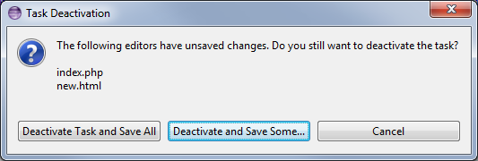

| Release | Resolved | Merged | Community Contributions |
| 3.16 June 24, 2015 |
40 bugs |
140 reviews |
Community contributions were
provided by Mat Booth, Myles Feichtinger, Chris Poon, and Nicholas Folk. Includes: Mylyn 3.16, Mylyn Builds 1.8, Mylyn Commons 3.16, Mylyn Context 3.16, Mylyn Docs 2.5, Mylyn Reviews 2.7. Mylyn Tasks 3.16, Mylyn Versions 1.8. |
Also see the New & Noteworthy for: Mylyn 3.15, Mylyn 3.14, Mylyn 3.13, Mylyn 3.12, Mylyn 3.11, Mylyn 3.10, Mylyn 3.9, Mylyn 3.8, Mylyn 3.6, Mylyn 3.4, Mylyn 3.2, Mylyn 3.0, Mylyn 2.0, Mylyn 1.0-0.6, Mylyn 0.5, Mylyn 0.4, Mylyn 0.3
NOTE: Mylyn 3.16 requires Java 1.7 or later and supports Eclipse 3.8, 4.4 or 4.5. See the download page for repository locations.
|
Cancel Context Switch |
When deactivating a task with unsaved editors, you are prompted to save the editors or cancel the context switch. This gives you the opportunity to inspect the changes and decide whether to save them before the task is deactivated.  |
|
|
|
|
Restore Task Editor |
When deactivating a task, if the task's editor is open, it will be restored when the task is reactivated. |
|
CVS Support |
Automatic commit message generation for CVS has been moved to a separate
feature. When upgrading, CVS users will need to install an additional feature,
Mylyn Context Connector: CVS Support (
org.eclipse.mylyn.team.cvs)
, from the Mylyn update site,
|
|
Dark Theme |
Notification popups have improved support for themes, including the dark theme. The notification background gradient colours are now chosen based on the theme.
|
|
|
|
|
Notifications Preference Page |
The notifications preference page has been moved from the Mylyn preference category to the General category. |
|
File Links |
The Gerrit connector has improved handling for links to individual files on a review. When a link is clicked, the corresponding patch set will be expanded in the review editor and the patch set contents will be downloaded. If the patch set has already been downloaded, the compare editor will open. |
|
|
|
|
Gerrit 2.10 and 2.11 |
Gerrit 2.10 and 2.11 are now supported. Support for versions earlier than 2.9 has been removed. |
|
Hide Succeeding |
The builds view allows you to hide suceeding build plans so you can focus on failures.
|
|
|
|
|
Hudson 3.2.2 and Jenkins 1.596.2 |
Hudson 3.2.2 and Jenkins 1.596.2 are now supported |
|
Bugzilla 5.0rc3, 4.4.9, 4.2.14, and 4.0.18 |
Bugzilla 5.0rc3, 4.4.9, 4.2.14, and 4.0.18 are now supported. |
See porting guide for additional notes on API changes.
|
Tasks: Connectors listed under multiple brands |
Connectors can be listed multiple times under different brands, using different labels and icons, by implementing the new methods in RepositoryConnectorBranding. See bug 467045. |
|
|
|
|
Tasks: Prevent task deactivation |
A boolean shouldDeactivateTask(ITask) method has been added to TaskActivationAdapter. See bug 334937. |